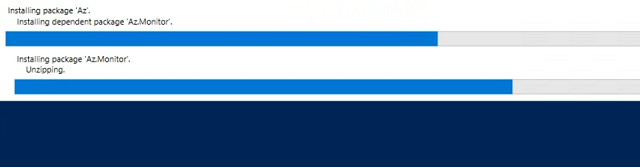
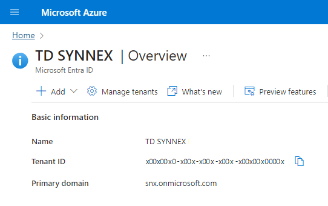
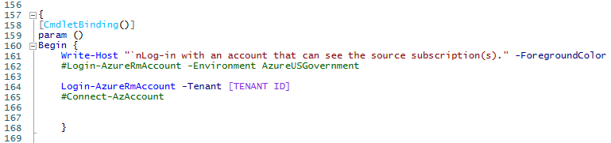
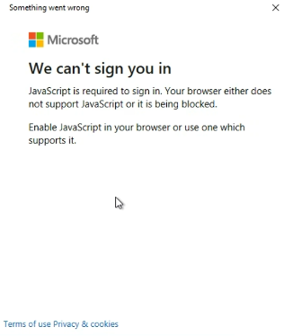
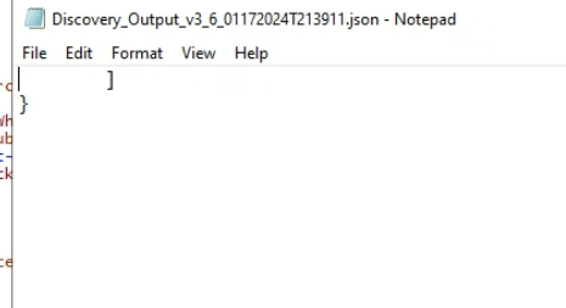
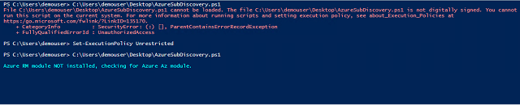

Troubleshooting
What is the Azure Discovery Script?
The Azure Discovery Script is a PowerShell script that runs locally on your computer that can login to the Azure Tenant and list all Resources and Resource Groups within a Subscription. The Script generates a JSON file which can then be sent back to your Solutions Architect.
The script makes no changes to the Azure environment and only requires Reader access on the Subscription.
Note: Always launch PowerShell ISE as Administrator.
Download the Azure Discovery Scripts
The Azure Discovery Scripts should be sent in a ZIP File through email. If Outlook is preventing the files from sending, please ask the Solutions Architect for the Link to download the scripts directly.
Scripts AzureDiscoveryScript AzureDiscoveryScript_MFA AzureDiscoveryScript_CSIf MFA is not enabled, use the script titled AzureDiscoveryScript. Otherwise use AzureDiscoveryScript_MFA.
If using Cisco DUO Mobile for MFA, use AzureDiscoveryScript_MFA. For all other third-party MFA environments, use the script titled AzureDiscoveryScript_CS.
The Azure Discovery Scripts should be run locally on your computer. It will then request you to login to the Azure Tenant and select the corresponding Subscription.
Delegate to Solutions Architect
If you would like the Solutions Architect to run the Azure Disovery Scripts on your behalf, you can create a new user account in Azure Entra ID and assign Reader RBAC on the Subscription. Another option is to use send a Guest User Invite to the Solutions Architect.
Please send the Tenant ID and Subscription ID for the Pay as You Go Subscription to the Solutions Architect. For security reasons, please delete the Solution Architect from Azure Entra ID after this process is completed.
Prerequisites - Azure Module
The Discovery Script will not run if the Azure Module is not installed in PowerShell.
Run the following Commands: Install-Module -Name PowerShellGet -ForcePowerShell should automatically download the Azure Modules. If not, use the command listed above. This process will take several minutes.
Prerequisite - Insert the Tenant ID on Line 164
For the Discovery Script to login to the correct tenant, add the Tenant ID to Line 164. The Tenant ID can be found in the Azure Portal by navigating to the Entra ID page.
Paste the Tenant ID where it reads [Tenant ID].
Note: Remove the Brackets.
Troubleshooting - We can't sign you in
Error message: "JavaScript is required to sign in. Your browser either does not support JavaScript or it is being blocked. Enable JavaScript in your browser or use on which supports it."
We've mitigated this error by installing the Microsoft Edge Browser. This error can often occur if the Microsoft Edge Browser has never be launched before. Launch the Edge Browser then run the script again.
Troubleshooting - Blank JSON File
Sometimes the script will finish but the resulting JSON file is empty.
We have resolved this issue by running the script again.
Troubleshooting - Execution-Policy
Error Message: AzureDiscoveryScript.ps1 is not digitally signed. You cannot run this script on the current system.
 Command: Set-ExecutionPolicy UnrestrictedThis is a security feature built into PowerShell. To workaround this, enter the command listed above. Remember to run PowerShell ISE as Administrator.
Troubleshooting - Temp Folder doesn't exist
The script will fail near completion if a Temp Folder is not already created.
This error can be resolved by created the folder: C:/Temp
Additional Notes
Below we have listed any additional notes which may be helpful.
Security features on a work computer may prevent PowerShell from working correctly. We often mitigate this issue by using a Virtual Machine setup in our Azure Lab environment. Please reach out for assistance if you would like help running the script.
While Cisco DUO Mobile MFA is a third-party application, we have found it works with the AzureDiscoveryMFA script which is used for Microsoft first-party MFA.
If you would like to move the Azure resources yourself, a guide for moving the most common resources can be found here.
Microsoft Support Documentation for details on which resources are movable can be found here.
Document prepared by Richard Hartman | TD SYNNEX